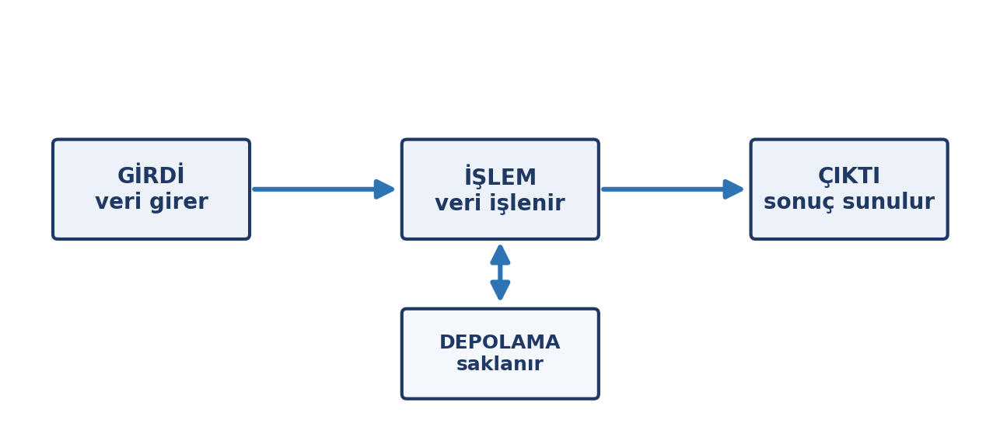

flowchart TD
A[Güvenlik açığı fark edildi] --> B{Yama mevcut mu?}
B -->|Evet| C[Yamayı uygula]
B -->|Hayır| D[Geçici önlem al]
C --> E[Durumu bildir]
D --> E
E --> F[Kayıt altına al]
Quarto Özellikleri
ENF101 ders malzemesi için örnek belge
Bu belge nedir?
Bu, ders malzemesi üretirken kullanabileceğimiz Quarto özelliklerinin örneklerini bir arada gösteren bir başvuru belgesidir. Amacı, “şu görünümü nasıl elde ederim?” sorusunun cevabını kaynağıyla birlikte göstermektir.
Her bölümde önce kaynak kod, ardından o kodun ürettiği sonuç yer alır. Beğendiğiniz örneği kopyalayıp kendi dosyanıza taşıyabilirsiniz.
NotBu belge ders içeriğinin parçası değildir
ornekler/ klasörü yalnızca başvuru amaçlıdır. Öğrencilere dağıtılan malzeme hafta-NN-konu/ klasörlerinde durur.
Metin biçimlendirme
Kalın, italik, kalın italik, satır içi kod, üstü çizili, alt simge H2O, üst simge x2.
Kaynak:
**Kalın**, *italik*, ***kalın italik***, `satır içi kod`, ~~üstü çizili~~,
alt simge H~2~O, üst simge x^2^.Listeler
Madde işaretli
- Birinci madde
- İkinci madde
- Alt madde
- Başka bir alt madde
- Üçüncü madde
Numaralı
- Birinci adım
- İkinci adım
- Alt adım
- Alt adım
- Üçüncü adım
Görev listesi (kutucuklu)
Tanım listesi
- Veri
-
İşlenmemiş ham gerçekler.
- Enformasyon
-
Bağlam içine yerleştirilmiş veri.
Çağrı kutuları
Quarto’nun hazır kutu tipleri vardır. Her biri farklı bir amaç için renklendirilir.
NotNot
Genel bilgi vermek için. En sık kullanılan kutu tipi.
İpucuİpucu
Pratik öneri veya kısayol vermek için.
ÖnemliÖnemli
Mutlaka bilinmesi gereken bilgi için.
UyarıUyarı
Dikkat edilmezse sorun çıkaracak durumlar için.
DikkatDikkat
Riskli işlemler için. En güçlü uyarı tipi.
NotBaşlığı özelleştirebilirsiniz
Başlığı değiştirmek için ## satırına istediğinizi yazmanız yeterlidir.
Kaynak:
::: {.callout-warning}
## Uyarı
Dikkat edilmezse sorun çıkaracak durumlar için.
:::Tablolar
| Kavram | Tanım | Örnek |
|---|---|---|
| Veri | Ham gerçekler | 23,5 |
| Enformasyon | Bağlam kazanmış veri | Hava 23,5 °C |
| Bilgi | Yorumlanmış enformasyon | Öğle vakti koşulmaz |
Sütun genişliği, ayırıcı satırdaki tire sayısıyla ayarlanır. Hizalamayı iki nokta belirler: :--- sola, :---: ortaya, ---: sağa.
| Sola hizalı | Ortaya | Sağa |
|---|---|---|
| metin | metin | 1250 |
| metin | metin | 48 |
Kod blokları
Sözdizimi renklendirmesi otomatiktir.
sayilar = [48, 49, 50, 52, 51, 53, 54, 56]
ortalama = sum(sayilar) / len(sayilar)
print(f"Ortalama: {ortalama:.1f}")quarto render hafta-03-yazilim-isletim-sistemleriMatematik
Satır içi ifade: \(E = mc^2\) ve \(\pi \approx 3{,}14\).
Blok hâlinde:
\[\int_{0}^{\infty} e^{-x^2}\,dx = \frac{\sqrt{\pi}}{2}\]
Toplam gösterimi:
\[\bar{x} = \frac{1}{n}\sum_{i=1}^{n} x_i\]
Dipnotlar
Metin içinde bir açıklama vermek için dipnot kullanılabilir1. Dipnotlar sayfa altında görünür.
Çapraz başvurular
Belge içindeki tablo, şekil ve bölümlere otomatik numarayla atıf yapılabilir. Örneğin yukarıdaki Tablo 1 tablosuna ya da Bölüm 11 bölümüne bakabilirsiniz.
Tablo ve şekillerin otomatik numara alması için etiket verilir:
| Kavram | Açıklama |
|---|---|
| Etiket | {#tbl-ad} biçiminde yazılır |
| Atıf | @tbl-ad biçiminde çağrılır |
Sütun düzeni
Sayfayı yan yana sütunlara bölmek mümkündür.
Sol sütun
Bu tarafa bir liste koyabiliriz:
- Birinci madde
- İkinci madde
- Üçüncü madde
Sağ sütun
Bu tarafa da tablo veya görsel:
| Öğe | Değer |
|---|---|
| A | 12 |
| B | 28 |
Diyagramlar
Quarto, diyagramları metin olarak yazmamıza izin verir. Görsel dosyası üretmeye gerek kalmaz; diyagram belgenin içinde yaşar ve düzenlemesi kolaydır. Üç ayrı sistem desteklenir.
NotTarayıcı gereksinimi
Mermaid ve Graphviz, PDF üretilirken arka planda bir tarayıcı kullanır. Kurulu değilse Quarto şu komutu önerir: quarto install chrome-headless-shell (tek seferlik, yaklaşık 150 MB). TikZ böyle bir şeye ihtiyaç duymaz.
Mermaid — akış şeması
Süreç adımları ve kararlar için en uygun araç.
Mermaid — sıra şeması
İki taraf arasındaki adım adım etkileşimi gösterir.
sequenceDiagram
participant Öğrenci
participant Sistem
Öğrenci->>Sistem: Kullanıcı adı ve parola
Sistem->>Öğrenci: Doğrulama kodu ister
Öğrenci->>Sistem: Tek kullanımlık kod
Sistem-->>Öğrenci: Giriş başarılı
Mermaid — zaman çizelgesi
Dönem planı veya proje takvimi için.
gantt
title Dönem Planı
dateFormat YYYY-MM-DD
axisFormat %d %b
section İçerik
Ders notları :a1, 2026-09-21, 40d
Sunumlar :a2, after a1, 25d
section Kontrol
Gözden geçirme :b1, after a2, 12d
Mermaid — oran şeması
pie title 40 Dakikalık Oturumun Dağılımı
"Anlatım" : 20
"Etkinlik" : 12
"Soru-cevap" : 8
Graphviz
Düğüm-kenar ilişkisinin yoğun olduğu yapılarda, özellikle ağ şemalarında Mermaid’den daha güçlüdür.
TikZ
Diğer ikisi kendi görünümleriyle çizer; TikZ ise belgenin içinde çalıştığı için tipografiyi ve renkleri aynen alır. Kurumsal görünümün önemli olduğu şemalar için en uygun seçenek.
NotTikZ renkleri
Yukarıdaki şema, ders malzemesinin kendi renklerini kullanır: navy, accentcol, lightbg. Bu renkler ortak tema dosyasında tanımlıdır, ayrıca belirtmeye gerek yoktur.
Görseller
Sayfaya görsel eklemek için ünlem işaretiyle başlayan bir satır kullanılır. Köşeli parantez içindeki metin altyazı olur ve Quarto bunu otomatik olarak numaralar.
Aşağıda 2. haftanın ders notundan alınmış gerçek bir diyagram var:

Kaynak kodu şöyledir:
{#fig-ornek width=62%}Birkaç nokta:
- Etiket (
{#fig-ornek}) sayesinde görsele metin içinden atıf yapılabilir: bkz. Şekil 1. - Genişlik yüzdeyle verildiğinde görsel sayfa genişliğine göre ölçeklenir. Sabit ölçü de verilebilir (
width=8cm). - Etiket verilmezse görsel yine görünür, ancak numara almaz ve atıf yapılamaz.
- Görsel dosyaları, belgenin yanındaki
gorseller/klasöründe tutulur.
İpucuGörseller nereden gelir?
Ders malzemesindeki diyagramlar çizim betikleriyle üretilir ve hafta-NN-konu/gorseller/ klasöründe saklanır. Fotoğraf veya ekran görüntüsü kullanılacaksa telif durumuna dikkat edilmelidir: kaynak göstermek kullanım hakkı vermez, lisansın uygun olması gerekir.
Alıntı ve ayraç
Alıntı bloğu böyle görünür. Genellikle başka bir kaynaktan yapılan alıntılar veya vurgulanmak istenen ifadeler için kullanılır.
Yukarıdaki yatay çizgi üç tire ile oluşturulur ve bölümler arasında ayraç görevi görür.
Numarasız başlık
Bazı başlıkların numara almamasını istiyorsanız {.unnumbered} kullanın.
Bu başlık numara aldı
Bu başlık numarasız
Yalnızca HTML çıktısında çalışan özellikler
Bu belge PDF olarak üretildi. Bazı Quarto özellikleri yalnızca HTML çıktısında anlamlıdır:
| Özellik | Ne yapar |
|---|---|
| Sekmeli içerik | Aynı yerde sekmelerle birden çok içerik gösterir |
| Kod katlama | Uzun kod bloklarını katlanır hâle getirir |
| Etkileşimli tablolar | Sıralanabilir ve filtrelenebilir tablo |
| Belge içi arama | Uzun belgelerde arama kutusu |
Ders malzemesi PDF olarak dağıtıldığı için bu özellikler kullanılmıyor. Ancak malzemenin bir bölümünü web sayfası olarak yayımlamak istersek, aynı .qmd dosyasından HTML üretmek mümkündür — Quarto’da çıktı biçimi belgenin başındaki ayarla değişir:
format:
pdf: default
html: defaultBu satırlarla aynı belge hem PDF hem web sayfası olarak üretilir; içeriği ikinci kez yazmak gerekmez.
Özet
Bu belgede gösterilenler:
| Özellik | Ne için |
|---|---|
| Metin biçimlendirme | Vurgu, kod, simge |
| Listeler | Sıralı ve sırasız içerik |
| Çağrı kutuları | Not, ipucu, uyarı |
| Tablolar | Karşılaştırmalı bilgi |
| Kod blokları | Örnek komut ve program |
| Matematik | Formül ve gösterim |
| Dipnotlar | Sayfa altı açıklama |
| Çapraz başvuru | Tablo ve bölümlere atıf |
| Sütunlar | Yan yana içerik |
| Mermaid | Akış, sıra, takvim, oran |
| Graphviz | Ağ ve ilişki şemaları |
| TikZ | Kurumsal görünümlü şemalar |
| Görseller | Fotoğraf, ekran görüntüsü, grafik |
Hangisini nerede kullanacağınızdan emin değilseniz, benzer bir örneği ders malzemesinde bulabilirsiniz: hafta-NN-konu/ klasörlerindeki dosyalar bu özelliklerin gerçek kullanımını içerir.
Dipnotlar
Dipnotun içeriği buraya yazılır. Sayfa altında numaralı olarak çıkar.↩︎